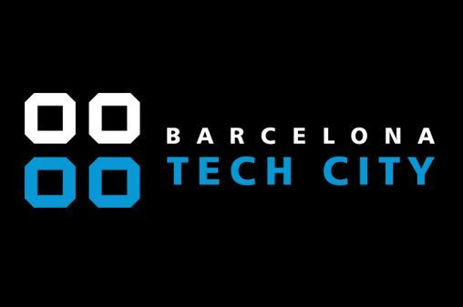

Barcelona Tech anuncia becas
Tras el éxito de la convocatoria HEMOS AMPLIADO DE 50 A 100 el número de becas ofrecidas para participar en BUS84 la formación gratuita en propósito de marca e impacto social para profesionales desempleados del marketing y la comunicación.
El 30 de septiembre arrancará el BUS84 con la colaboración de 20 expertos y 11 entidades del ecosistema de impacto social y medioambiental, entre los que me encuentro, para formarte como purpose maker y ayudarte a conseguir una inserción laboral de calidad.
Si aún no te has inscrito y estás en situación de desempleo o conoces a alguna persona que le pudiera interesar, compártelo, inscríbete y consigue una de las nuevas plazas para subir al BUS84.
Juntos emprenderemos un viaje apasionante hacia el propósito de marca. Como profesionales del marketing y de la comunicación tenemos el deber y el poder de influir en el mundo que nos rodea a través de nuestras acciones.